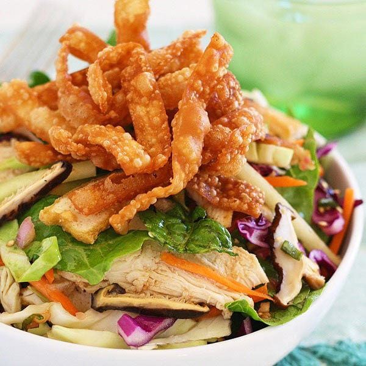
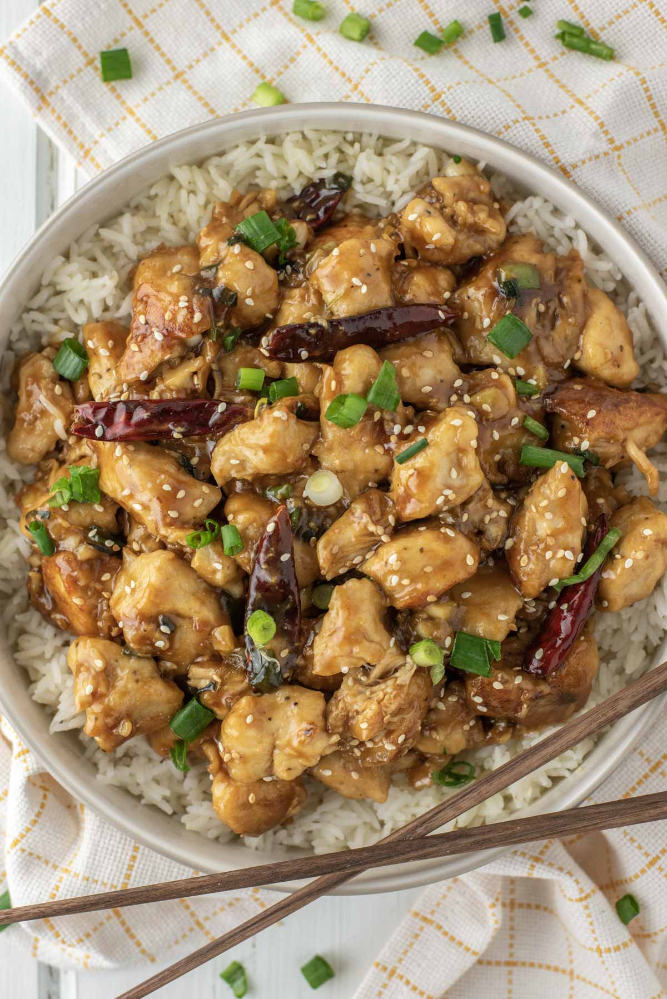
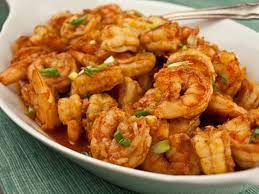
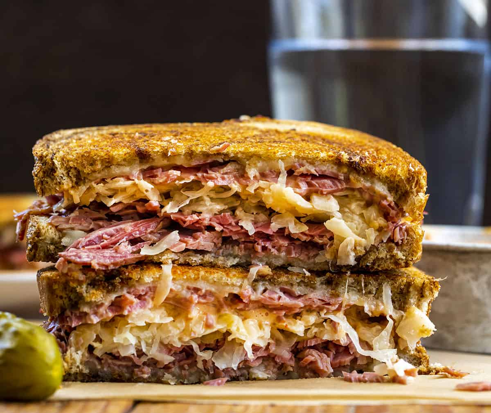
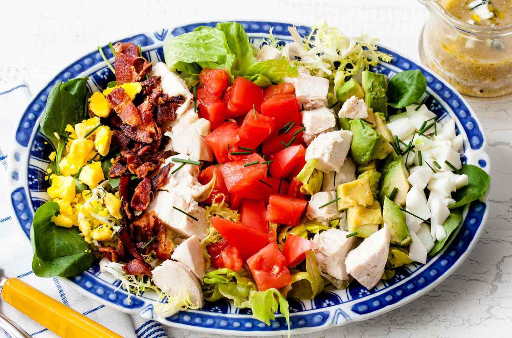

chimichanga (/tʃɪmiˈtʃæŋɡə/; Spanish: [tʃimiˈtʃaŋɡa]) is a deep-fried burrito that is common in Tex-Mex and other Southwestern U.S.
Chinese chicken salad

Instead of using the “kitchen sink” approach, this crunchy, colorful Chinese Chicken Salad has a carefully-curated selection of vegetables and toppings. The dressing is delicious and doubles as a marinade and dipping sauce, too.
General Tso Chicken

General Tso’s Chicken is that perfect combination of sweet, savoury, spicy and tangy with crispy Chinese chicken bites. It’s a Chinese takeout favourite that just pushes all the right buttons
Chhole bature
Chole Bhature also known as Chana Bhatura is one of the most popular Punjabi dish liked almost all over India. Chole stands for a spiced tangy chickpea curry and Bhatura is a soft and fluffy fried leavened bread. Chola Bhatura always make for a delicious and filling meal.
Dal Makhani
Dal makhani (pronounced [daːl ˈmək.kʰə.ni]) is a dish originating in New Delhi, India.[2] A relatively modern variation of traditional lentil dishes, it is made with urad dal (black beans) and other pulses, and includes butter and cream (makhan is Hindi for butter)
Barbecued shrimp

The “barbecue” in barbecue shrimp refers not to the process of barbecuing shrimp on a grill, but rather the sauce in which the shrimp are prepared that results in a smokey red, or “barbecued,” color!
Reuben sandwich

This American grilled cheese sandwich consists of rye bread, corned beef, Swiss cheese, sauerkraut, and Russian or Thousand Island dressing.
Cobb salad

what makes this salad so special is the fact that, aside from tomatoes, salad greens, and other veggies, it also features the likes of avocado, Roquefort cheese, hard-boiled eggs as well as crisp bacon and chicken, be it grilled, roasted, or boiled.
.png)